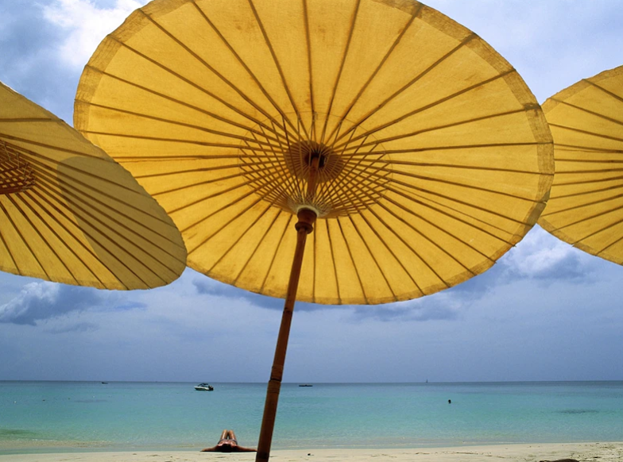

Travel Photography Tips
ROBERT CAPUTO|PHOTOGRAPHY FIELD GUIDE|ABOUT 2 HOUR AGO
Each place we visit has its own particular look, character, and ambiance. If we want photographs of our travels to be good and lasting, they should capture all of these qualities, and say as much about a place as give the literal look of it.
We are unlikely to long remember the smell and buzz of a flower garden in spring, the awe of gazing for the first time at the mountain we intend to climb, the caress of a tropical breeze, the thrill of a huge roller coaster, the wonder of our first wild bear, or the adrenaline of rafting white water. Our photographs need to bring these and other sensations back, to trigger our memories, and to communicate how we felt to others. To do this, we need to think and feel as much as look when setting out to make photographs.
First and foremost, think about what made you decide, out of all the places in the world, to choose this particular destination. Whatever it is—the beach, the rides, the mountain, the galleries, the food—obviously appeals to you. If it didn't, you wouldn't be going there. That site or activity (or inactivity) is one of the things you want to photograph. But there are probably many other interesting aspects of the place you may not be aware of. That's where research comes in.
Photographers for National Geographic spend a lot of time doing research. This helps us figure out what's there—what the place is about and what subjects we need to cover. Read brochures and travel books. Go to libraries, bookstores, or onto the Web. Talk to friends who have been there. Pick up travel information at the country's embassy. Find whatever you can that is relevant, and devour it.

Understanding the customs and traditions of a place is vital. For one thing, you want to be sure you act in a way that is not rude or offensive while you are there, and it's hard to know what's acceptable and what isn't with some knowledge. It can also help you understand things people do that at first encounter you might consider incomprehensible or even horrifying.
When you arrive at your destination, be open and try to take note of the first impressions—write them down if you have to. (A notebook is an essential accessory for a travel photographer.) When you see a place for the first time from the plane window, or when you drive around a bend and there it is, or as the ship nears some distant island—how do you feel? Where do your eyes go first? What do you notice about the place right away? A smell? The heat or cold? Blistering sunlight? Mysterious fog? A particular building or vista? The way people move? Their dress? Whatever it is, remember it. First impressions are invaluable sparks to creative interpretation, and by definition are not repeatable. You've seen the place in pictures, you've read about it. Now you're there, and all your senses can partake.
Get out there. The only way to discover the rhythm of life in a place, and so figure out what to shoot, is to experience it. Many places, particularly hot ones, are active very early in the morning and late in the afternoon but rather in a lull around midday. Get up early, stay out late. If you are on a tour that is scheduled to leave the hotel or ship at 9:00, get up well before dawn. Wander around before meeting up with your companions. If the tour goes back to the hotel or ship for lunch, don't go with them. Rather than take the bus back at the end of an afternoon tour, hang around until after sunset and then take a taxi. Use any spare time to get out and look for photographs. Besides availing yourself of more opportunities, time spent discovering the place will enrich your experience.